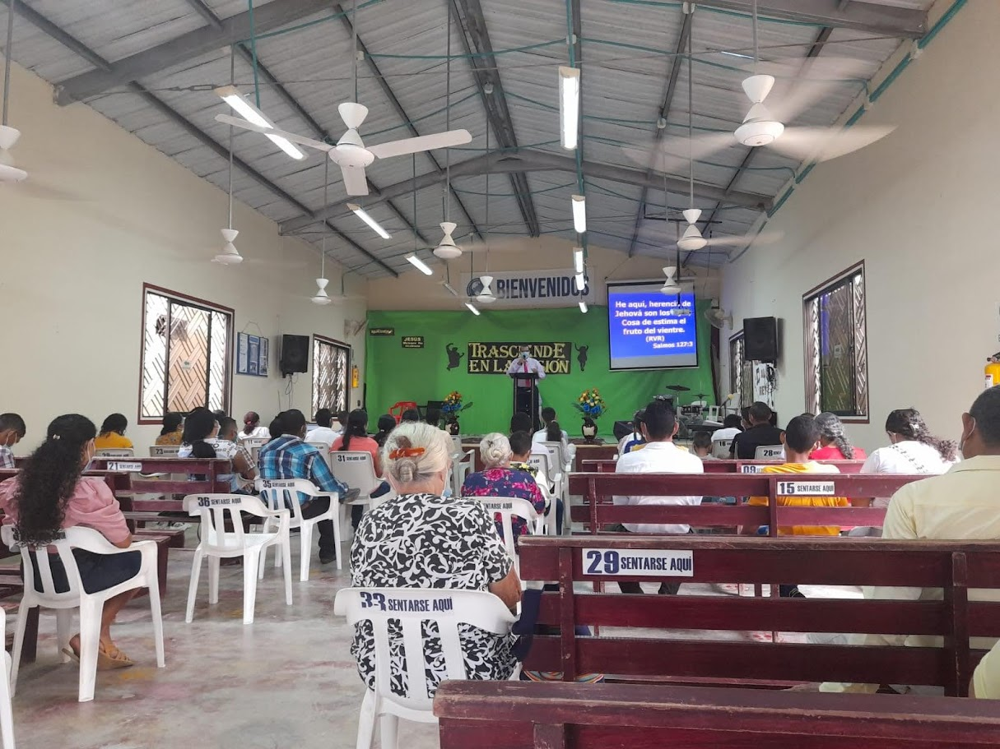

Lo que hacemos

Evangelización y Misiones
- Predicación en templos y en las calles: Se realizan cultos abiertos, campañas evangelísticas y visitas a hogares para compartir el mensaje de salvación.
- Trabajo misionero: La iglesia envía misioneros a diferentes regiones del país y del mundo donde aún no hay presencia de la IPUC. Esto incluye zonas rurales, pueblos indígenas y otros países.
- Uso de medios digitales: La IPUC ha adoptado la tecnología para expandir el evangelio a través de transmisiones en vivo, redes sociales, emisoras radiales cristianas y páginas web.
- Distribución de literatura cristiana: Se reparten tratados, folletos y Biblias a personas interesadas en conocer más de Dios.
Cultos y Reuniones
- Culto de Oración: Enfocado en la intercesión y la búsqueda de Dios a través de la oración. Se presentan peticiones y se clama por la iglesia, las familias y la comunidad.
- Cultos de Damas y Varones: Reuniones enfocadas en el crecimiento espiritual y personal de cada grupo. Se enseñan principios bíblicos aplicados a su rol en la familia y la sociedad.
- Cultos Juveniles: Espacios diseñados para la juventud, donde se imparten enseñanzas bíblicas, dinámicas y actividades de integración para fortalecer su relación con Dios.
Horario de nuestras reuniones
| Día |
Horario |
| Martes |
6: 45 - 8:15 PM |
| Jueves |
6: 45 - 8:15 PM |
| Sábado |
6: 45 - 8:15 PM |
| Domingo |
7: 30 - 9:30 AM |
Formación Cristiana
- Escuela Dominical:Se realiza los domingos y está dirigida a todas las edades. Se estudian diferentes temas bíblicos y doctrinales para el fortalecimiento espiritual.
- Encuentros y Retiros Espirituales: Jornadas dedicadas a la enseñanza bíblica y la búsqueda de Dios, donde los participantes reciben ministración, consejos y dirección espiritual.
Trabajo Social
- Asistencia a familias en situación vulnerable: Se organizan campañas para la entrega de mercados, ropa, útiles escolares y otros elementos esenciales para personas de escasos recursos.
- Oración por los enfermosEquipos de la iglesia oran por los enfermos, brindan apoyo espiritual y, en algunos casos, ofrecen ayuda material a los pacientes y sus familias.